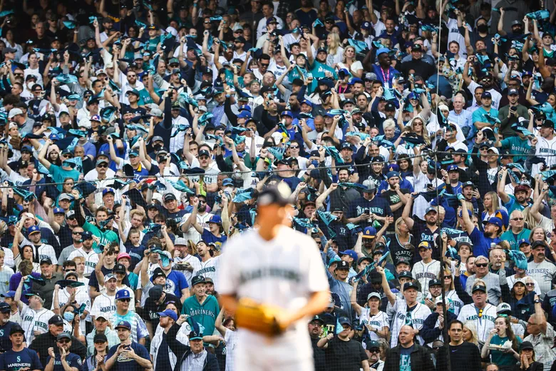

Be Great
Make Memories with the Seattle Mariners
More Than Just A Team
Welcome to our Seattle Mariners fan page, where passion meets perseverance! Beyond the wins and losses, the Mariners embody resilience, hope, and the unwavering spirit of the Pacific Northwest. Join us as we celebrate the unity, camaraderie, and the remarkable journey that make the Mariners more than just a team – they're a symbol of community, dedication, and the pursuit of greatness.